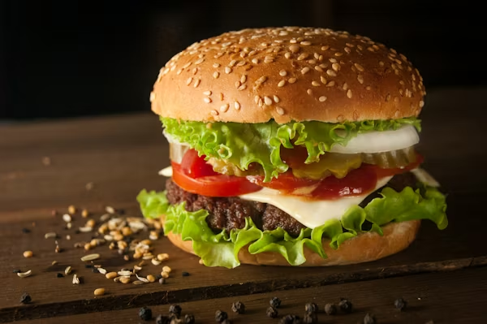

Burger

Description
A timeless favorite made with a juicy, flame-grilled beef patty, layered with crisp lettuce, fresh tomato, and sliced onion.
Topped with melted cheese and our signature house sauce, all served on a soft, toasted bun.
Simple, satisfying, and full of bold flavor.
Ingridients
- 1 egg
- 500 grams of ground beef
- tomato
- lettuce
- onion
- cheddar cheese
- Brioche rolls
- salt
- pepper
- 2 tablespoons of mayo
- 1 teaspoon of ketchup
- 1 teaspoon of mustard
Steps
- Mix mayonnaise, ketchup, and mustard together to create a simple classic sauce.
- Form the ground beef into a patty slightly larger than the bun and season it with salt and black pepper.
- Cook the patty on a hot pan or grill for 3–4 minutes per side until browned and juicy.
- Place a slice of cheddar on top of the patty during the last minute of cooking and let it melt.
- Lightly toast the burger buns until golden and warm.
- Spread the sauce on the bottom bun, add fresh lettuce, place the cheesy patty on top, then layer with tomato, onion, and pickles before closing with the top bun.
- Serve the burger hot and enjoy.